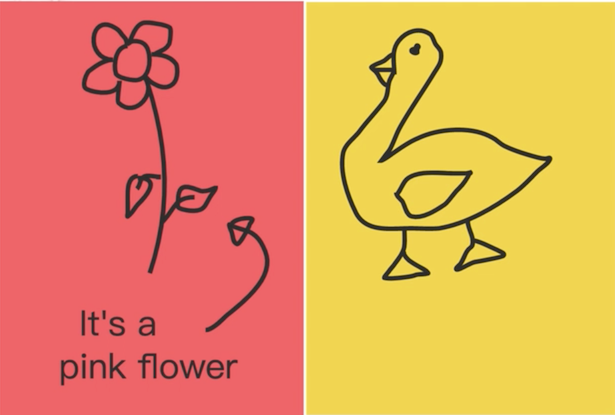

TutorJr 心得分享(二)：試上心得
- 7 minutes read - 3192 words前言
這一系列的文章會介紹為什麼經過一番比較之後，最後選擇 TutorJr 作為兩個小朋友的線上英語學習平台，如果您也在為小朋友找適合的英語學習管道，也許會對您有些幫助。
預計這一系列文章會分為以下幾個主題來撰寫：
這篇文章是系列文章的第二篇，介紹一下我家的彤姐(六歲)和妹妹(三歲半)試上 OiKid 和 TutorJr 的心得。
開始之前先說一下兩位小朋友的個性，彤姐從小就比較內向害羞，要好一陣子才能跟陌生人開口說話，雖然長大之後有好一些，但還是會擔心她上線上課程，會不會不敢開口說話；另外根據之前安排她試聽 Cambly Kids 的經驗，在挑老師的過程中，彤姐對美女老師也比較有興趣(還以為是在後宮選妃)；至於妹妹則是人來瘋，很敢跟別人搭訕，去公園溜滑梯五分鐘也能跟其他小朋友交朋友的類型，我們反而不太擔心她。也因為這樣，所以當初在跟這兩家約試聽課程的時候，妹妹沒有特別註明，但我請顧問特別幫彤姐安排了女老師。
OiKid
- 試上時間：每堂試聽課實際上課時間大約十五到二十分鐘左右
- 上課老師：兩位都是台灣老師
- 上課系統：OiKid 自行研發的系統，只有 web 介面，透過瀏覽器上課
- 互動白板：有，就像Windows上的小畫家一樣，老師可以在上面畫重點、打字，學生也可以畫畫跟老師互動
- 獎勵系統：有，上課過程中，老師可以給學生星星做為獎勵，吸引小朋友專心上課回答問題
- 課程錄影：有，事後可以透過 OiKid 的網站觀看錄影重播，不過不是很即時，顧問說要可能等 24 小時後才看得到
彤姐上課的過程還蠻順利的，只是當下我們沒有讓她戴耳機，直接透過筆電的麥克風收音，不知道是不是離筆電太遠，後來我們觀看重播的時候，發現彤姐的聲音很小聲。台灣老師上課還蠻有耐心的，而且會用很誇張的表情、音調和肢體動作吸引小朋友注意，雖然是遠端教學，但看起來問題不大。
試上心得
聯繫顧問安排試教課程之後，請我加入了一個 LINE 的帳號，是 OiKid 的官方帳號，但發送訊息時，會由特定的顧問回覆，這一點 OiKid 和 TutorJr 都是一樣的，只是 TutorJr 的更進一步，還整合了聊天機器人，關於一些特定的問題可以即時得到回覆，這部分 TutorJr 加一分。
顧問先透過 LINE 請我在開始上課之前，事先上官方網站，用他給的帳號密碼登入，測試一下麥克風跟視訊沒問題；登入成功之後，進入教室系統也都沒什麼問題，顧問簡單閒聊之後，就先下線，等上課時間到再讓我們登入虛擬教室。
試上課程的兩位台灣老師都還蠻有耐心的，尤其是第二位妹妹的老師；妹妹是完全沒有基礎，連 ABC 都不認識的，老師很耐心的引導，在開始正式試教課程之前，花了大約五分鐘左右的時間先跟妹妹閒聊，用英文問妹妹喜歡吃什麼、喜歡什麼動物等，妹妹都聽不懂，老師會用中文說一次，再讓妹妹回答，等妹妹卸下心防之後，才開始正式的試教課程。
雖然姐妹倆的程度不一樣，不過試教課程的內容都是一樣的，分為兩個部分：第一部分是認識字母及發音，第二部分則是認識數字(1到5)的英文怎麼說。
第一部分先認識四個 ABC 的字母，大寫小寫都有，老師會透過互動白板連連看，把一樣的大寫和小寫字母連在一起(比方說 “D” 連到 “d”)，過程中也會練習每個字母的自然發音法，再認識一個透過該字母開頭的單字；至於第二部分的認識數字則是用英文來說數字 1 到 5，用氣球的方式包裝，看起來比較有趣，每個氣球上有一個數字，請小朋友用英文說 1 到 5，數數看有幾個氣球。
整體來說，我覺得 OiKid 的試上過程還不錯，兩位台灣老師也都蠻好的，有需要的時候，都會切換回中文講解，對程度沒那麼好的小朋友來說比較友善。
TutorJr
- 試上時間：每堂試聽課實際上課時間跟 OiKid 差不多，大約十五到二十分鐘左右
- 上課老師：兩位都是外國老師；彤姐的部分是一位女老師，妹妹則是一位男老師，兩位都是北美口音
- 上課系統：TutorJr 自行研發的系統，有 web 介面(透過瀏覽器上課)，也有 App (Android/iOS都有)
- 互動白板：有，就像Windows上的小畫家一樣，老師可以在上面畫重點、打字，學生也可以畫畫跟老師互動
- 獎勵系統：有，上課過程中，老師可以給學生星星跟愛心做為獎勵，吸引小朋友專心上課回答問題；另外還有罐頭音效(鼓掌聲)
- 課程錄影：有，事後可以透過 TutorJr 的網站或 App 觀看錄影重播，比 OiKid 快，不用等到隔天，可能等 30 分鐘後就能看到了
試上心得
因為只有特別請顧問安排彤姐的老師，所以彤姐是一位女外師，妹妹則是一位男老師，令我比較意外的是，這位男老師還是個大光頭！
一開始也是彤姐先試聽，我原本擔心會不會因為是外國人，彤姐不敢說話，結果沒想到完全不會！老師的口音是很標準的北美口音，聽起來很舒服；反而是一向很外向的妹妹，可能因為從來沒看過光頭，加上又是男老師，所以對他有點害怕😨，剛開始上課的時候一直回頭不敢看螢幕，跟我們說：「我會害羞」，老師使盡渾身解術要吸引妹妹的注意力，但這次不管是給星星或是愛心都沒有，最後老師用了一招我們看了都發笑的招式，就是透過系統功能，把自己的頭變成一張大笑臉😊，果然成功讓妹妹覺得沒那麼可怕，肯回頭看老師好好上課了，本來我都差點要發 LINE 訊息請顧問結束這堂試聽課，不要浪費老師的時間了。
課程內容主要是練習打招呼，認識幾個數字、顏色和小動物的英文，老師還用互動白板手繪花朵和鴨子，很可愛：

上試聽課程時，我在旁邊主要觀察小朋友對外師的接受程度，看起來兩個小朋友都還蠻能接受外師的，這讓我有點意外，原本以為她們對外國朋友的接受程度會比較低，沒想到蠻快就進入狀況，也能跟著老師大聲唸出要唸的單字。
小朋友的想法
上完課後，我分別詢問了兩姐妹的想法，她們都還蠻喜歡上英文課的，不管是 OiKid 或是 TutorJr 都很喜歡；我特地問姐姐會不會害怕外國老師，姐姐馬上就說不會，還說她以前小時候比較害怕，但是現在長大了就不會了，這讓爸爸放下了心裡的一塊大石頭。至於妹妹，她也說很喜歡上英文課，只是她很少看到外國人，我問她如果是女老師會不會比較好，她立刻點點頭，說如果是姐姐的那個老師她不會怕。
試聽完隔天，這兩姐妹還問我什麼時候還可以上英文課，一臉迫不及待的樣子；但我想可能是一開始覺得新鮮，如果要長期上下去，還是得有其他的配套措施，這部分會留到系列文章的最後一篇才來跟大家分享。
綜合比較
兩家試聽課的教材都不是正式上課的內容，所以只能觀察一下小朋友能不能坐得住，對英文的接受度，喜不喜歡上這堂課等等。綜合來說，這兩家的試聽課內容其實都很不錯，至少能吸引小朋友的注意力，雖然有時還是會扭來扭去，但至少可以坐滿二十分鐘左右沒有問題；這大概也是兩家線上平台，不約而同將每堂正式課時數限定在 25 分鐘的原因。
底下分成師資和系統兩個部分分享：
師資
OiKid 的優點主要是台灣老師可以中英文切換，遇到小朋友聽不懂的地方，能用中文講解；但某方面來說，這也會是個缺點，我會擔心小朋友太依賴中文的講解，沒辦法提早養成用英語思考的能力。口音的部分，台灣老師的口音其實也不錯，但就是聽得出來不是 native speaker，我一開始擔心小朋友會怕外師，不然的話，能提早適應並模仿外師的口音，她們的口音之後會比較像 native speaker。
TutorJr 的外師對於小朋友的教學也蠻有一套的，她們能放下身段，用各種方式來拉近與小朋友的距離；原本我最擔心的原本是我家彤姐不敢跟外師對話，但經過這次試聽課程之後，讓我放心了不少。
系統
兩家的系統都很不錯，TutorJr 稍微好一點點，基本上就是 OiKid 有的功能 TutorJr 都有，OiKid 沒有的 TutorJr 也有 XD
TutorJr 有自家的 App 可以在平板上使用，對有這個需求的家庭可能是加分的，但我們家都是用筆電上課，所以這部分還好。
另外 OiKid 跟 TutorJr 都有 LINE 的官方帳號，試聽前顧問會請我們加入，之後主要都是透過 LINE 溝通，兩家的官方帳號都會幫你轉送訊息到跟我們聯繫的特定顧問；但 TutorJr 做得不錯的是整合了聊天機器人，一些簡單的罐頭問題不用等顧問回覆，馬上就可以得到答案，反之 OiKid 這部分還有待加強。
這篇試聽課程的心得分享到這裡吿一個段落，下一篇文章會比較一下正式上課教材內容的部分 - TutorJr 心得分享(三)：教材內容。